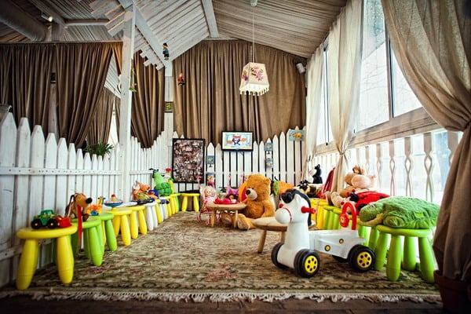
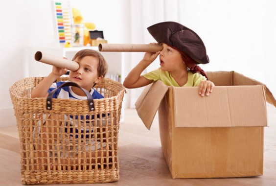
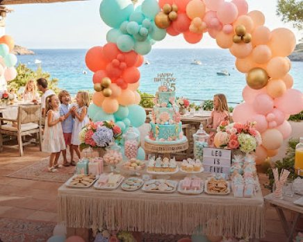

Дитяча кімната та розвиваюча анімація
Простір радості для дітей та спокою для батьків. Творчі майстер-класи, безпечні лабіринти та турботливі аніматори щодня на морському узбережжі.
Працює щодня: 10:00 — 21:00 Вік: від 2 до 10 років

Турбота у кожній деталі
Комфортний простір, де малеча розвиває таланти, знаходить нових друзів і проводить дні незабутньо.
Професійні бебісітери
Досвідчені педагоги та аніматори, які знаходять індивідуальний підхід до кожної дитини.
Турботливий доглядТворчі майстер-класи
Ліплення з кераміки, малювання морських пейзажів, кулінарні міні-уроки випікання піци.
Щоденні урокиІгровий лабіринт і басейн
Двоповерховий сертифікований комплекс із м’яким гіпоалергенним покриттям.
Активні розвагиКорисне дитяче меню
Натуральні свіжі страви від шеф-кухаря: різноманітні пасти, міні-бургери, смузі без цукру.
Смачно і корисно
Розклад щоденних активностей
Розроблено дитячими психологами для чергування активного руху, творчої концентрації та розслаблення.
Ранкова йога та весела руханка
Легка гімнастика, вправи на поставу з ігровими елементами та дихальні практики під шум моря.
Морський майстер-клас «Скарби Чорного моря»
Створення сувенірів із мушель, розпис гальки акрилом і знайомство з мешканцями підводного світу.
Настільні розвиваючі ігри та квести
Командні пригоди з пошуком прихованих скарбів комплексу, головоломки, вікторини.
Дитяча дискотека з улюбленими героями
Танцювальні батли, мильні бульбашки, флешмоби та вкрай неонові браслети на вечірньому майданчику.
Організація дитячих днів народження біля моря
Тематичний авторський декор, захоплюючі анімаційні шоу-програми, фірмовий кенді-бар та святковий торт від кондитерської «Афаліна». Ми створюємо день, сповнений щирого дитячого захвату.
- Індивідуальні сценарії
- Шоу мильних бульбашок
- Спеціальна банкетна зона
- Професійний фотограф
